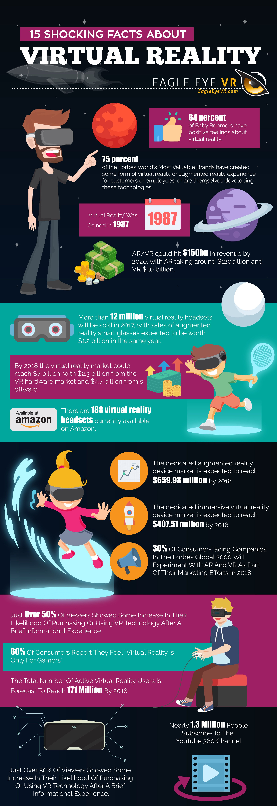

Find out how AR VR technology works, what makes them so popular, and future predictions.
This article aims to explain the growth in demand behind this exciting technology.
Virtual, augmented and mixed reality products have continued to receive high levels of funding and investment during the 2010 decade. There has also been immense hype over these products during the decade, with evangelists of the technology believing that it will be used in all aspects of day to day life. The growth of the technology over the COVID period has been noticeable, with many new use cases for the technology. IDTechEx predicts that this technology will grow to over $30bn by 2030.
The major players in the virtual reality market are Oculus and Vive headsets. There are many different use cases for virtual reality headsets, but one key application is for training in extreme environments. A virtual reality headset can model the different aspects of a dangerous environment without the trainee having to enter a difficult real-life situation.

What is Augmented and Virtual Reality Technology?
The basic definition of these terms are as follows:
Virtual reality (VR). This replaces reality with a completely new 3D digital environment.
Augmented reality (AR). This overlays digital content on top of the real world.
Mixed reality (MR). This adds superimposed digital content that superficially interacts with the environment in real-time.
There are a broad range of use cases and industries using augmented, mixed, and virtual reality technology. For example, manufacturing, remote assistance, education, and training, to name but a few. These applications are used in many different industries. Two common use cases are discussed.
One of the most well-known uses of VR headsets is in gaming applications. Companies such as Oculus, HTC, and Sony, have created a range of products which consumers can use for a totally immersive gaming experience. However, there are also other applications for XR products such as remote assistance and training. This report from IDTechEx includes analysis of many key leaders in the AR, VR and MR fields, and provides you with a deeper understanding for the various applications for such products.
AR and MR products are being used to solve the "Skills Gap" problem. This problem occurs when skilled workers retire, and with them, their skilled knowledge they have gained. This knowledge needs to be transferred to new workers. The skilled workers can record workflows and processes which the new employees can follow in a safe hands-free environment. Furthermore, they can annotate the real world with technical specifications to aid the worker. Some companies, such as Vuzix, use their own products on their assembly floors.